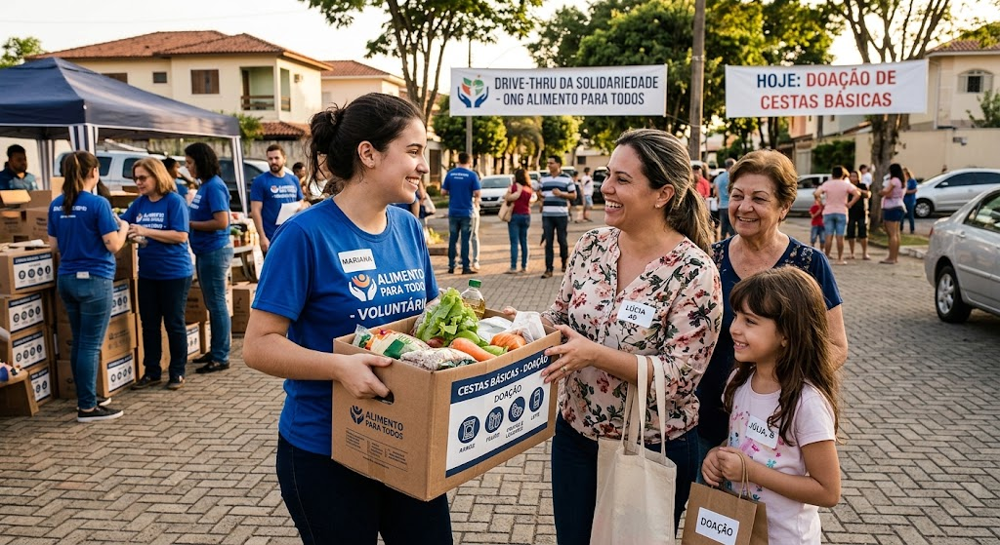

- Em andamento
- Ação social
Ação Social Comunitária
Iniciativa focada na arrecadação e distribuição de alimentos e suprimentos básicos.

Participar como voluntárioIniciativa focada na arrecadação e distribuição de alimentos e suprimentos básicos.

Participar como voluntário